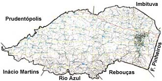

Irati é um município brasileiro do estado do Paraná. Localizada na região Sudeste do estado, sua população, conforme estimativas do IBGE de 2019, era de 60727 habitantes, que é uma mescla de diferentes etnias, especialmente poloneses e ucranianos que buscam manter costumes e tradições de seus ascendentes.
Para saber mais sobre as origens da cidade de Irati, Clique aqui
Irati é uma cidade com grande movimentação em torno dos eventos culturais e religiosos, para saber mais, Clique aqui
Para ter acesso ao nome de todos os prefeitos e respectivos anos de mandato, Clique aqui
A cidade de Irati tem uma vasta quantidade de opções de Ensino Superior e Técnico, como:
Para acessar o site da Prefeitura: Clique aqui
Irati, Irati, cidade amada Que marchando na trilha do sucesso. A bandeira ostentas desfraldada Com o brado de ordem e progresso. Irati, Irati, terra querida Para honrar este nome tão pujante. Tua gente trabalha destemida Pelo bem do Brasil gigante. Tens escolas, tens indústrias E tens campanhas de trigais Onde os filhos que são fortes Teu perfil elevam sempre mais Lá no morro a linda imagem Que é nosso altivo relicário Lembrará à posteridade O teu feliz cinqüentenário.
A economia iratiense é composta por:
| Tipo de Serviço | % |
| Comércio e Serviços | 57,89% |
| Indústria | 26,18% | Agropecuária | 15,93% |
Obs.: Música escolhida da minha biblioteca pessoal, pois tive problemas em baixar outro arquivo.